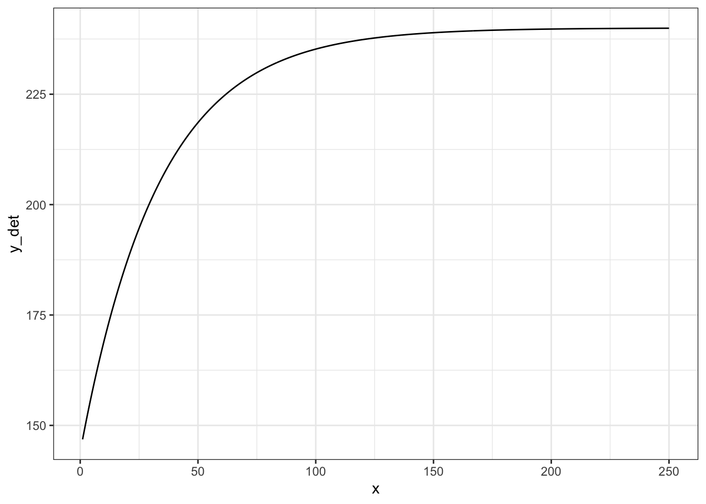
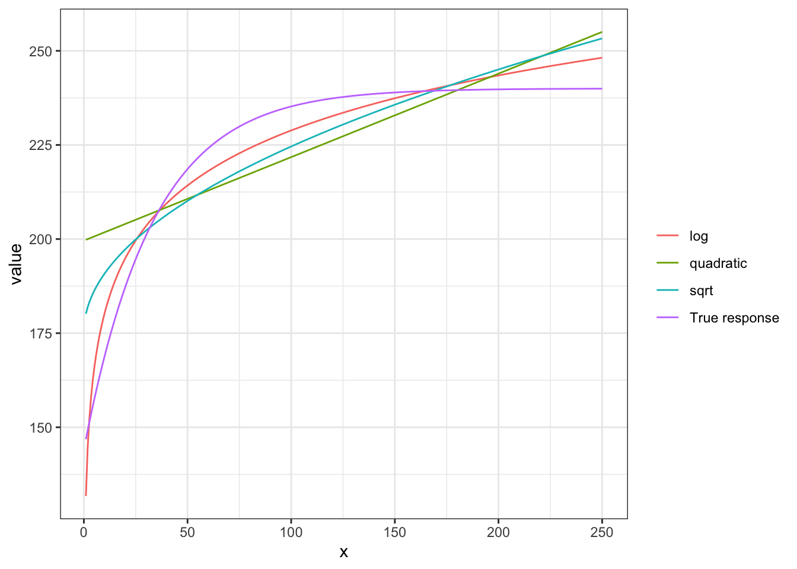
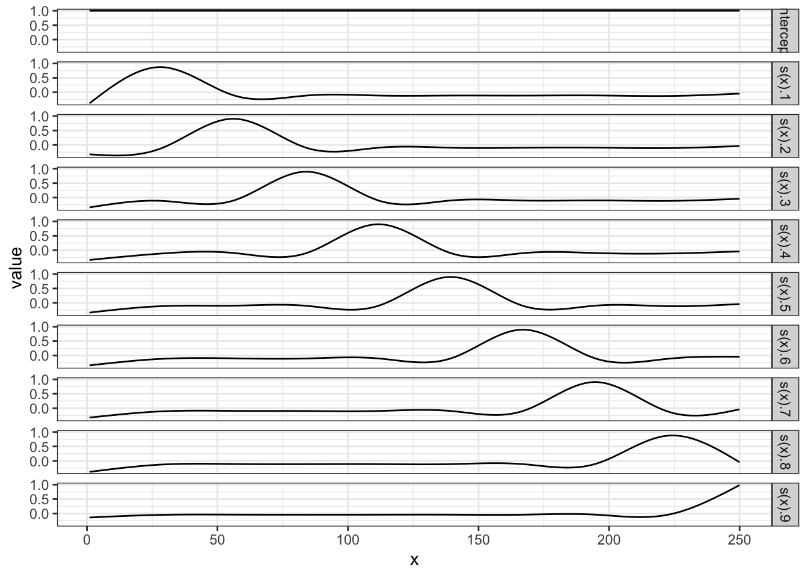
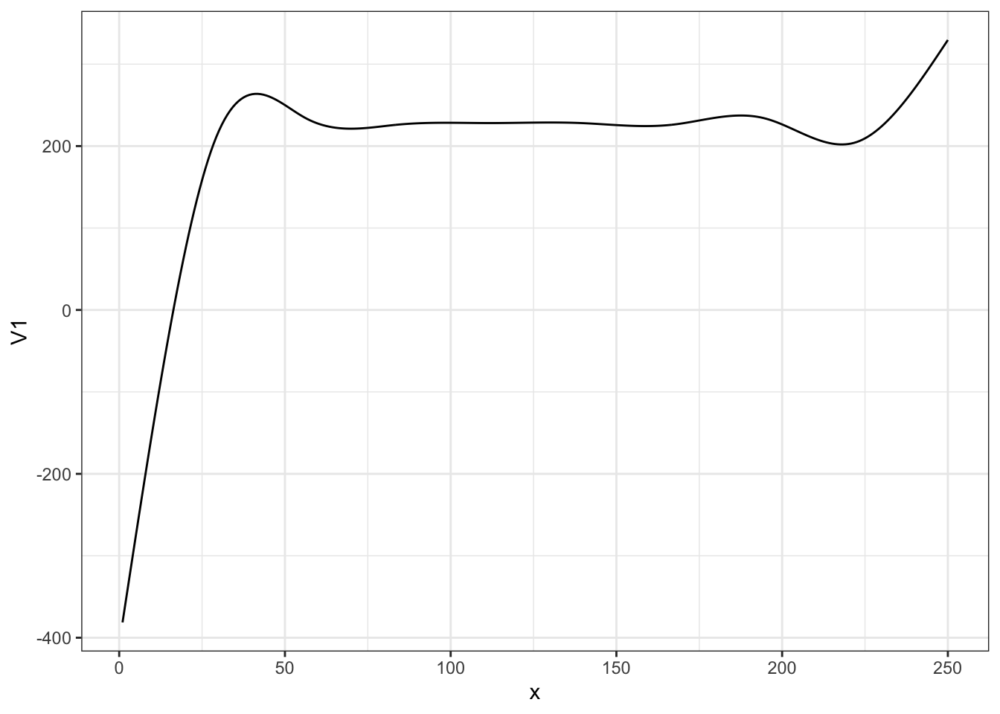
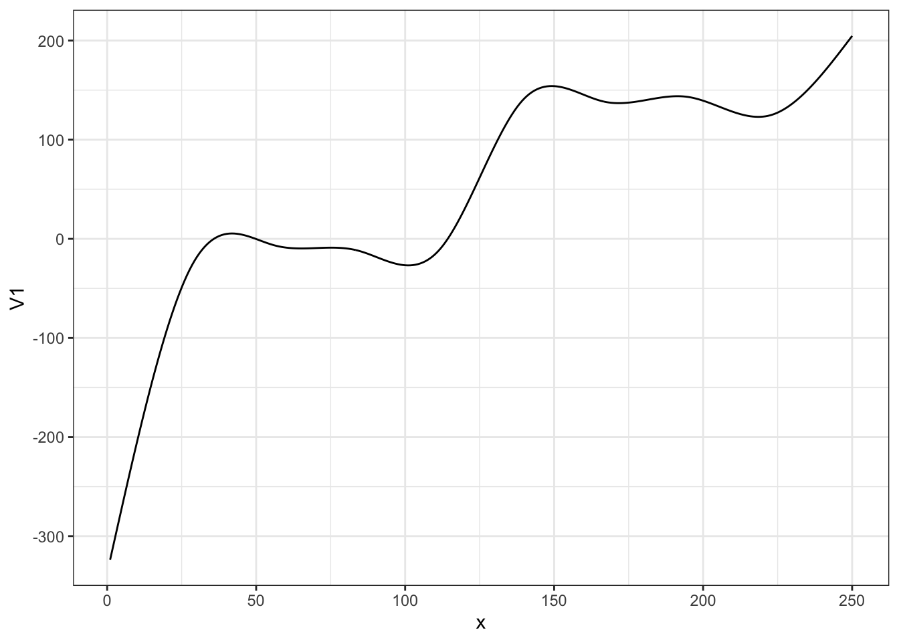
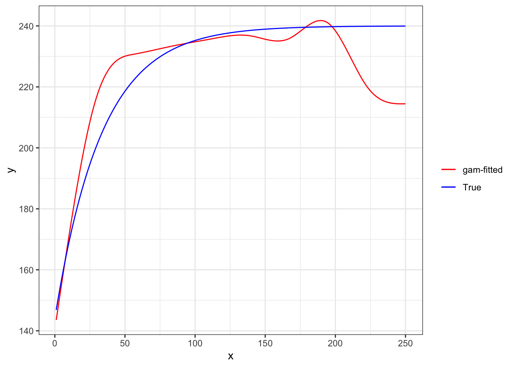
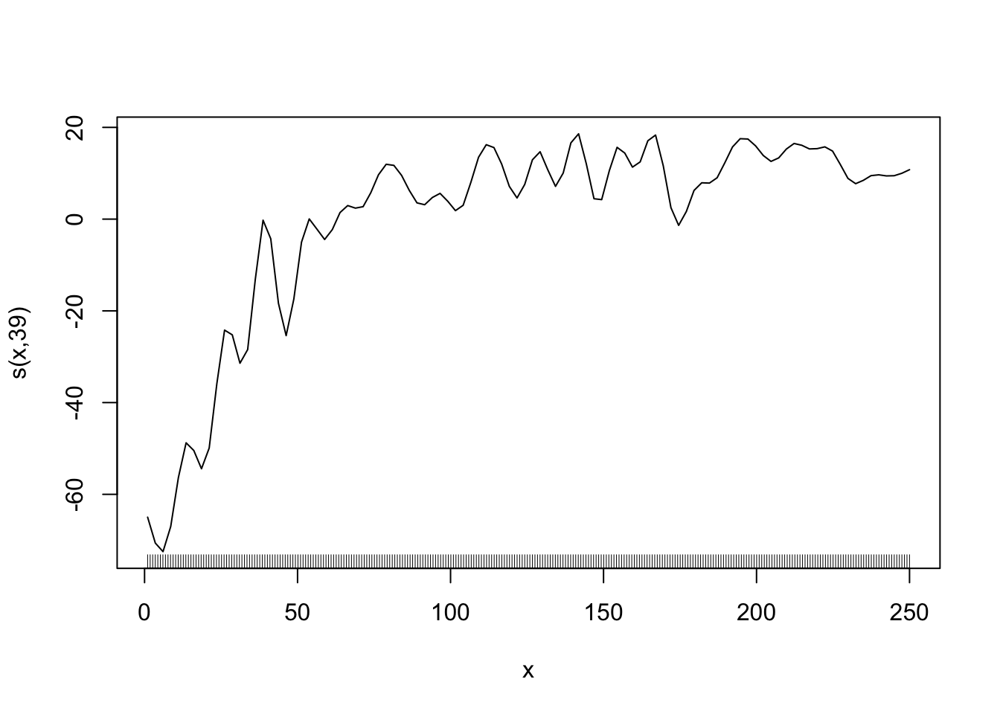
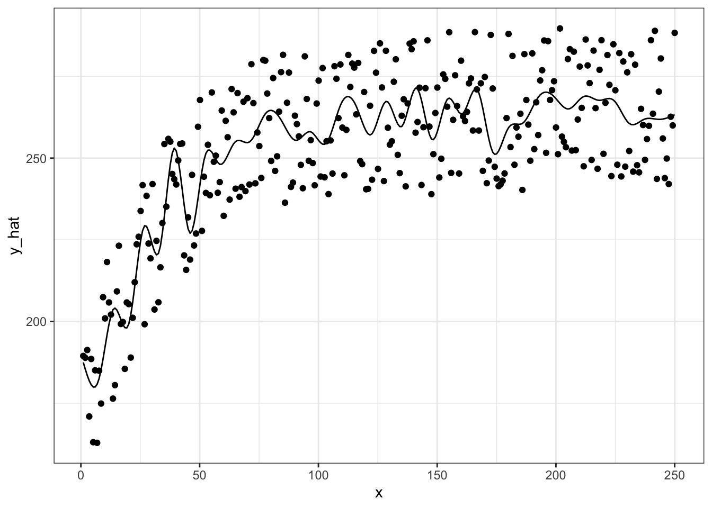
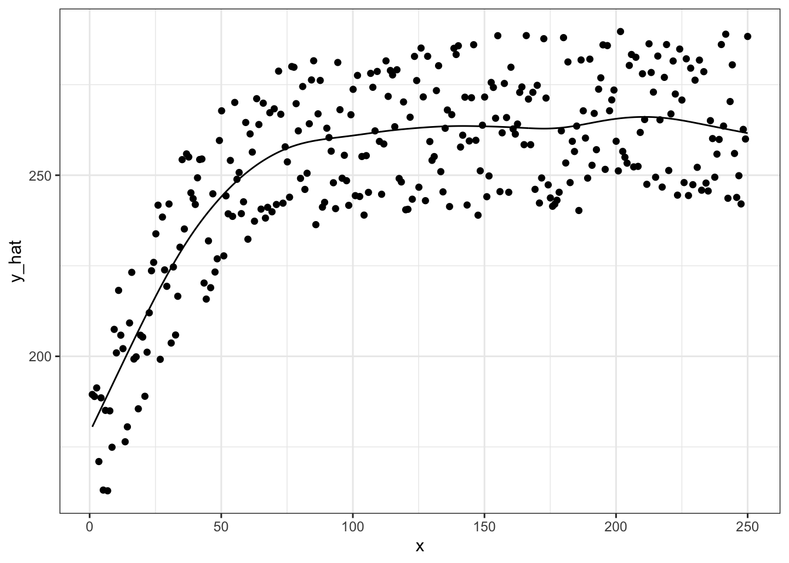

2Non-linear function estimation: Smoothing Splines and K-nearest neighbor regression
The purpose of this section is to introduce you to the idea of semi-parametric and non-parametric regression methods. We only scratch the surface by just looking at smoothing splines and K-nearest neighbor regression methods. The world of semi-parametric and non-parametric regression is much deeper. But, that’s out of the scope of this section. The primary goal of this section is to familiarize you with the concepts of over-fitting, regularization, hyper-parameters, and parameter tuning using smoothing splines and K-nearest neighbor regression methods as examples.
2.1 Flexible functional form estimation
There are many quantitative relationship of two variables that cannot be represented easily by liner (in parameter) parametric models. For example, consider crop yield response to fertilizer. Typically, yield increases at the diminishing rate as fertilizer rate increases. However, at a high enough fertilizer rate, yield stops increasing (fertilizer is not a limiting factor at that point). This relationship is illustrated in the figure below.
set.seed(83944)#=== generate data ===#N<-300# number of observationsx<-seq(1, 250, length =N)y_det<-240*(1-0.4*exp(-0.03*x))e<-50*runif(N)# errordata<-data.table(x =x, y =y_det+e, y_det =y_det)#=== plot ===#(g_base<-ggplot(data)+geom_line(aes(y =y_det, x =x))+theme_bw())

Let’s try to fit this data using linear parametric models with \(sqrt(x)\), \(log(x)\), and \(x + x^2\), where the dependent variable is y_det, which is \(E[y|x]\) (no error added).
#=== sqrt ===#lm_sq<-lm(y_det~sqrt(x), data =data)data[, y_hat_sqrt:=lm_sq$fit]#=== log ===#lm_log<-lm(y_det~log(x), data =data)data[, y_hat_log:=lm_log$fit]#=== quadratic ===#lm_quad<-lm(y_det~x+x^2, data =data)data[, y_hat_quad:=lm_quad$fit]
Code
plot_data<-melt(data, id.var ="x")%>%.[variable!="y", ]%>%.[, fit_case:=fcase(variable=="y_det", "True response",
variable=="y_hat_sqrt", "sqrt",
variable=="y_hat_log", "log",
variable=="y_hat_quad", "quadratic")]ggplot(plot_data)+geom_line(aes(y =value, x =x, color =fit_case))+scale_color_discrete(name ="")+theme_bw()

None of the specifications do quite well. Indeed, you cannot represent the relationship well using well-known popular functional forms. Let’s now look at methods that are flexible enough to capture the relationship. First, smoothing splines, and then K-nearest neighbor next.
2.2 Flexible representation using spline basis functions
Detailed discussion of smoothing splines is out of the scope of this book. Only its basic ideas will be presented in this chapter. See @wood2006generalized for a fuller treatment of this topic.
Consider a simple quantitative relationship of two variables \(y\) and \(x\): \(y = f(x)\).
\[
\begin{aligned}
y = f(x)
\end{aligned}
\]
It is possible to characterize this function by using many functions in additive manner: \(b_1(x), \dots, b_K(x)\).
\[
\begin{aligned}
y = \sum_{k=1}^K \beta_k b_k(x)
\end{aligned}
\]
where \(\beta_k\) is the coefficient on \(b_k(x)\).
Here are example of \(b_1(x), \dots, b_K(x)\) may look like (1 intercept and 9 cubic spline functions).
Code
basis_data<-gam(y_det~s(x, k =10, bs ="cr"), data =data)%>%predict(., type ="lpmatrix")%>%data.table()%>%.[, x:=data[, x]]%>%melt(id.var ="x")ggplot(data =basis_data)+geom_line(aes(y =value, x =x))+facet_grid(variable~.)+theme_bw()

By assigning different values to \(b_1(x), \dots, b_K(x)\), their summation can represent different functional relationships.
Here is what \(\sum_{k=1}^K \beta_k b_k(x)\) looks like when \(\beta_1\) through \(\beta_10\) are all \(200\).
\[
y = \sum_{k=1}^10 200 b_k(x)
\]
Code
data.table(
variable =unique(basis_data$variable),
coef =rep(200, 10))%>%.[basis_data, on ="variable"]%>%.[, sum(coef*value), by =x]%>%ggplot(data =.)+geom_line(aes(y =V1, x =x))+theme_bw()

Here is what \(\sum_{k=1}^K \beta_k b_k(x)\) looks like when \(\beta_1\) through \(\beta_4\) are all \(50\) and \(\beta_5\) through \(\beta_9\) are all \(200\).
data.table(
variable =unique(basis_data$variable),
coef =c(rep(50, 5), rep(200, 5)))%>%.[basis_data, on ="variable"]%>%.[, sum(coef*value), by =x]%>%ggplot(data =.)+geom_line(aes(y =V1, x =x))+theme_bw()

In practice, we fit the model to a dataset to find coefficient estimates that fit the data well. Here, we use the gam() function from the mgcv package. Note that, we use \(E[y|x]\) (y_det) as the dependent variable to demonstrate the ability of smoothing splines to imitate the true function.
gam stands for Generalized Additive Model. It is a much wider class of model than our examples in this section. See @wood2006generalized for more details.
gam_fit<-gam(y_det~s(x, k =10, bs ="cr"), data =data)
s(x, k = 10, bs = "cr") in the regression formula tells gam() to use 10 knots, which results in an intercept and nine spline basis functions. bs = "cr" tells gam() to use cubic spline basis functions.
There are many other spline basis options offered by the mgcv package. Interested readers are referred to @wood2006generalized.
data.table(
variable =unique(basis_data$variable),
coef =gam_fit$coefficient[-1])%>%.[basis_data, on ="variable"]%>%.[, .(y_no_int =sum(coef*value)), by =x]%>%.[, y_hat:=gam_fit$coefficient[1]+y_no_int]%>%ggplot(data =.)+geom_line(aes(y =y_hat, x =x, color ="gam-fitted"))+geom_line(data =data, aes(y =y_det, x =x, color ="True"))+scale_color_manual(
name ="",
values =c("gam-fitted"="red", "True"="blue"))+ylab("y")+xlab("x")+theme_bw()
Warning in as.data.table.list(x, keep.rownames = keep.rownames, check.names
= check.names, : Item 2 has 9 rows but longest item has 10; recycled with
remainder.

As you can see, the trained model is almost perfect in representing the functional relationship of \(y\) and \(x\).
Now, when gam() fits a model to a dataset, it penalizes the wiggliness (how wavy the curve is) of the estimated function to safe-guard against fitting the model too well to the data. Specifically, it finds coefficients that minimizes the sum of the squared residuals (for regression) plus an additional term that captures how wavy the resulting function is.
Here is an example of wiggly (first) v.s. smooth (second) functions.
Code
gam_fit_wiggly<-gam(y~s(x, k =40, bs ="cr", sp =0), data =data)plot(gam_fit_wiggly, se =FALSE)

Code
gam_fit_smooth<-gam(y~s(x, k =5, bs ="cr"), data =data)plot(gam_fit_smooth, se =FALSE)
where \(\Omega(\hat{f}(x)) > 0\) is a function that captures how wavy the resulting function is. It takes a higher value when \(\hat{f}(x)\) is more wiggly. \(\lambda > 0\) is the penalization parameter. As \(\lambda\) gets larger, a greater penalty on the wiggliness of \(\hat{f}(x)\), thus resulting in a smoother curve.
You can specify \(\lambda\) by sp parameter in gam(). When sp is not specified by the user, gam() finds the optimal value of sp internally using cross-validation (cross-validation will be introduce formally in sec-cross-validation). For now, just consider it as a method to find parameters that make the trained model a good representation of the underlying conditional mean function (\(E[y|x]\)).
More specifically, it uses generalized cross-validation (GCV). A special type of cross-validation that can be done when the model is linear in parameter.
If you do not pick the value of sp well, the estimated curve will be very wiggly. Let’s see an example by setting the value of sp to 0, meaning no punishment for being very wiggly. We also set the number of splines to \(39\) so that \(\sum_{k=1}^K \beta_k b_k(x)\) is very flexible.
#=== fit ===#gam_fit_wiggly<-gam(y~s(x, k =40, bs ="cr", sp =0), data =data)#=== assign the fitted values to a variable ===#data[, y_hat:=gam_fit_wiggly$fitted.values]#=== plot ===#ggplot(data =data)+geom_line(aes(y =y_hat, x =x))+geom_point(aes(y =y, x =x))+theme_bw()

We call this phenomenon over-fitting (of the data by the model). An over-fitted model does well in predicting \(y\) when applied to the data the model used to train itself. However, it would do a terrible job in prediction on the data it has never seen clearly because it is not predicting \(E[y|x]\) well.
Important
Hyper-parameter: parameters that one needs to specify before fitting the model and affect the fitting process in ways that change the outcome of the fitting.
Parameter tuning: process that attempts to find the optimal set of hyper-parameters.
In mgcv::gam(), the hyper-parameters are the penalty parameter \(\lambda\) (specified by. sp), the number of knots (specified by k)\(^1\), the type of splines (specified by bs). Coefficient estimates (\(\alpha\), \(\beta_1, \dots, \beta_K\)) change when the value of sp is altered. Here is what happens when k\(= 3\) (less flexible than the k\(= 39\) case above).
\(^1\) or more precisely, how many knots and where to place them
#=== fit ===#gam_fit_wiggly<-gam(y~s(x, k =3, bs ="cr", sp =0), data =data)#=== assign the fitted values to a variable ===#data[, y_hat:=gam_fit_wiggly$fitted.values]#=== plot ===#ggplot(data =data)+geom_line(aes(y =y_hat, x =x))+geom_point(aes(y =y, x =x))+theme_bw()
Hyper-parameters can significantly influence the outcome. Since the user get to pick any numbers, it can be potentially used to twist the results in a way that favors the outcomes they want to have. Therefore, it is important to pick the values of hyper-parameters wisely. One way of achieving the goal is cross-validation, which is a data-driven way to finding the best value of hyper-parameters. We will discuss cross-validation in sec-cv in detail.
Here is the fitted curve when the optimal value of sp is picked given k = 40 and bs = "cr" using cross-validation.
That is, we are not tuning k and bs here.
#=== fit ===#gam_fit_cved<-gam(y~s(x, k =40, bs ="cr"), data =data)#=== assign the fitted values to a variable ===#data[, y_hat:=gam_fit_cved$fitted.values]#=== plot ===#ggplot(data =data)+geom_line(aes(y =y_hat, x =x))+geom_point(aes(y =y, x =x))+theme_bw()

You can see that the tuning of sp is successful and has resulted in a much better fitted curve compared to the case where sp was forced to be 0. As you will see, hyper-parameter tuning will be critical for many of the machine learning methods we will look at later.
2.3 Flexible representation using K-nearest neighbor